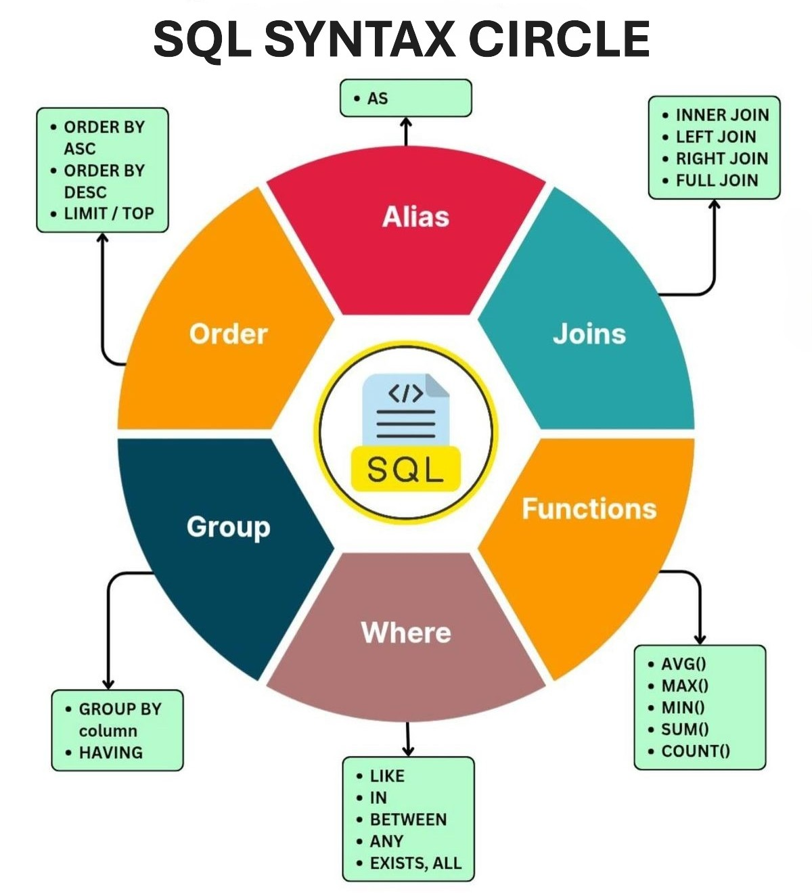

SQL: Gestión y Arquitectura de Datos

Domina el lenguaje universal de los datos estructurados
SQL es el pilar fundamental para cualquier aplicación que requiera persistencia de datos, permitiendo almacenar, manipular y recuperar información de forma eficiente y segura.
En este curso de Conquer Academy, aprenderás a diseñar arquitecturas de datos sólidas utilizando el modelo relacional, desde la creación de tablas y la definición de tipos de datos hasta la implementación de relaciones complejas entre entidades.
Dominarás la redacción de consultas avanzadas, el uso de funciones de agregación y la optimización de sentencias para gestionar grandes volúmenes de información, adquiriendo una habilidad crítica que conecta el backend de tus aplicaciones con la realidad del almacenamiento profesional de datos.
Temario del curso
- Fundamentos y Diseño Relacional
- Introducción a las bases de datos relacionales y sistemas gestores.
- Modelado de datos: Entidades, atributos y claves (Primary y Foreign Keys).
- Creación y modificación de estructuras (Sentencias DDL: create, alter, drop).
- Manipulación de Datos (DML)
- Inserción de registros (insert) y actualización de información (update).
- Eliminación segura de datos (delete y truncate).
- Consultas básicas de selección (select) y filtrado con cláusulas where.
- Consultas Avanzadas y Relaciones
- Uso de operadores lógicos, comparación y rangos (between, in, like).
- Unión de tablas mediante inner, left y right join.
- Ordenación y limitación de resultados (order by, limit).
- Agregación y Optimización
- Funciones de grupo: sum, avg, count, min y max.
- Agrupamiento de datos con group by y filtrado con having.
- Introducción a subconsultas y optimización de índices.